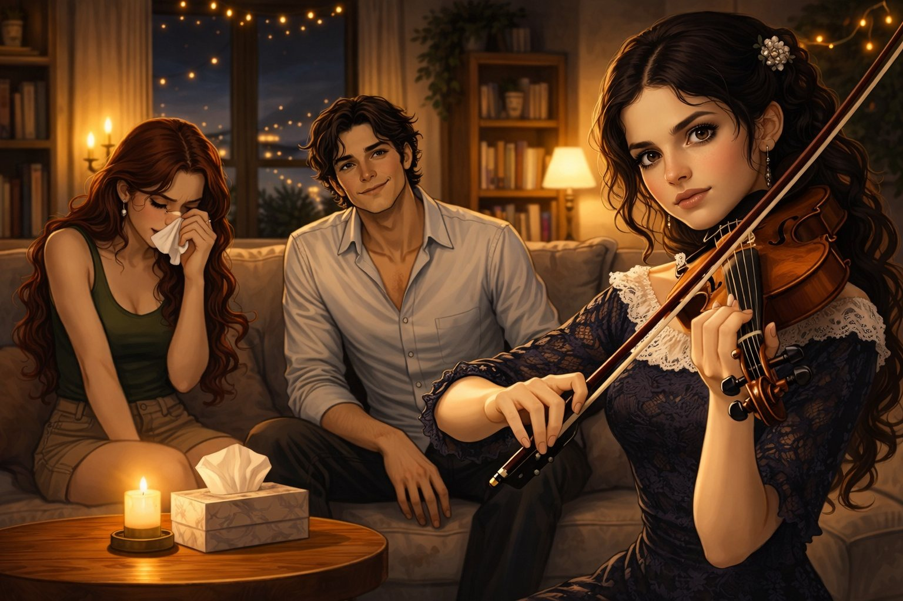

Capitolo 1: Le onde di Malaga
A Malaga, la quiete della fuga si incrina quando il passato ricompare sotto forma di una proposta impossibile da ignorare.

Alessio, adesso conosciuto come Marcos Sierra era in piedi sul balcone della loro casa bianca, osservando le onde turchesi del Mar Mediterraneo. Il sole cominciava appena a sorgere, tingendo il cielo di sfumature arancioni e lavanda. Dietro di lui, si sentiva la risata di Laura, cioè Claudia: stava preparando la colazione, canticchiando qualcosa in spagnolo. "Come se il passato non esistesse", pensò, stringendo tra le mani un vecchio giornale con il titolo: "Capolavoro di Botticelli scomparso: Interpol cerca i sospettati".
Claudia gli si avvicinò, avvolgendogli le spalle con le braccia. Le sue dita sfiorarono il giornale.
— Sei di nuovo preoccupato? — chiese a bassa voce. — Qui siamo persone diverse, Marcos. Nessuno ci troverà.
Lui annuì, ma nei suoi occhi balenò un’ombra. "E se ci trovassero?"
Quella sera, passeggiando lungo la passeggiata marittima, notarono un uomo in completo nero. Stava fotografando i turisti, ma il suo sguardo si posava troppo spesso su di loro.
— Non voltarti — sussurrò Claudia, stringendo la mano di Marcos. — Cammina più in fretta.
Svoltarono in un vicolo stretto, dove il profumo del gelsomino si mescolava alla brezza salmastra. Ma l’uomo li seguì.
— Señor Sierra? — risuonò alle loro spalle una voce con un leggero accento italiano.
Il cuore di Marcos si fermò. Si girò, pronto al peggio, ma invece di una minaccia vide un sorriso.
— Mi chiamo Enrico — si presentò lo sconosciuto, estraendo un biglietto da visita con il logo della galleria "Arte del Sole". — Ho sentito che vi occupate di… acquisizioni rare. Ho una proposta che potrebbe interessarvi.
Claudia aggrottò le sopracciglia:
— Non ci occupiamo più di queste cose.
— Davvero? — Enrico sogghignò, tirando fuori dalla tasca una foto. Il proprietario è disposto a pagare dei buoni soldi per il suo… trasporto.
Marcos sentì l’adrenalina pulsare di nuovo nelle vene. Guardò Claudia. Nei suoi occhi leggeva la stessa domanda: "Vale la pena rischiare per una libertà che potrebbe svanire da un momento all’altro?"